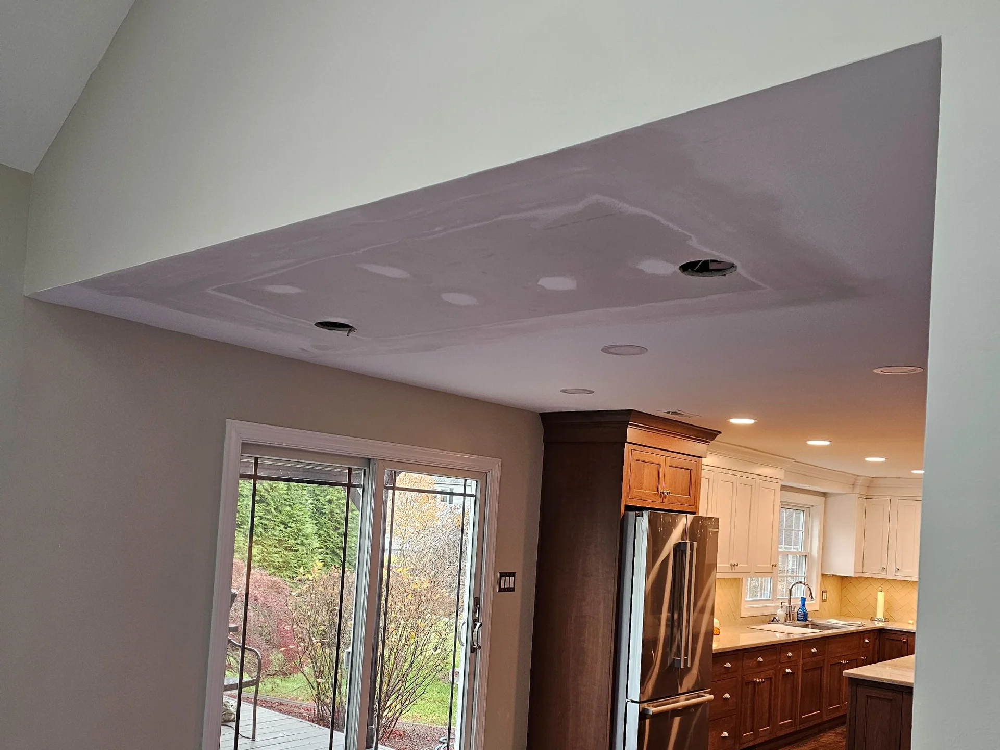
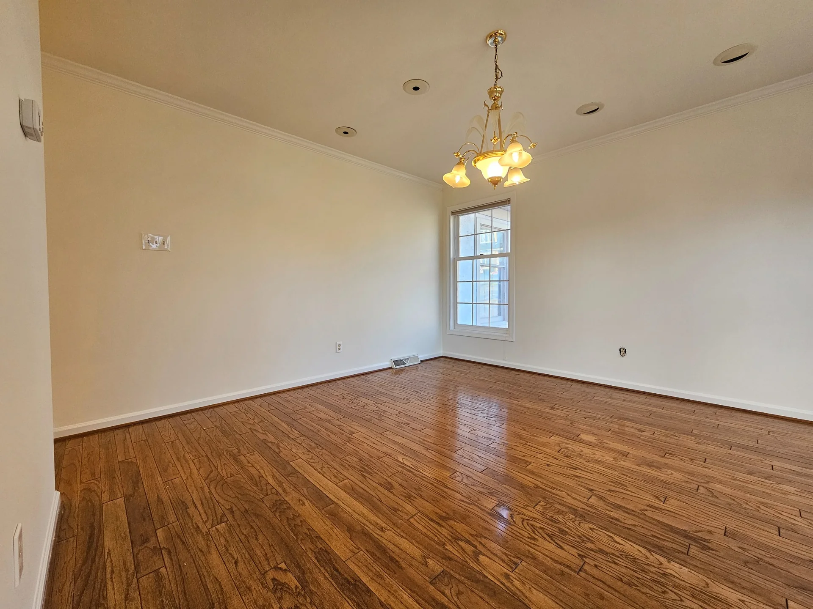

Wallpaper removal & drywall repair
The finish only looks as good as the surface underneath it.
Wallpaper removal, drywall repair, patching and surface preparation integrated into the painting process.

Real Cascade projectHow we approach it
Good finish work starts long before the final coat.
Walls and ceilings rarely arrive ready for paint. Old wallpaper, settlement cracks, patches, openings and previous repairs can all telegraph through a new finish. We address the surface first so the paint is not being asked to hide a repair problem.
Wallpaper removal
Drywall patching and repair
Ceiling repair
Hole and opening repair
Sanding, priming and surface preparation
Real Cascade work
See the finish in real spaces.


Scope before price
What shapes the project.
A useful estimate is tied to the actual condition of the surfaces and how the space has to function while the work is underway.
Frequently asked
Details before you decide.
Can you paint immediately after wallpaper removal?
Sometimes additional cleaning, skim work, sanding or priming is needed. The wall is evaluated after removal before the finish plan is set.
Do you repair ceiling openings?
Yes. Ceiling and drywall repair can be included when openings, patches or damage need to be restored before painting.
Can you blend repaired areas into existing walls?
The goal is to make the repair read as part of the surface, but the exact process depends on texture, sheen, lighting and the extent of the repair.
Is drywall repair priced separately?
Repair work is defined in the scope so you can see what is being addressed before painting begins.
Ready to talk through your project?
Share the basics and we will help you define the next step.
Request an Estimate ↗